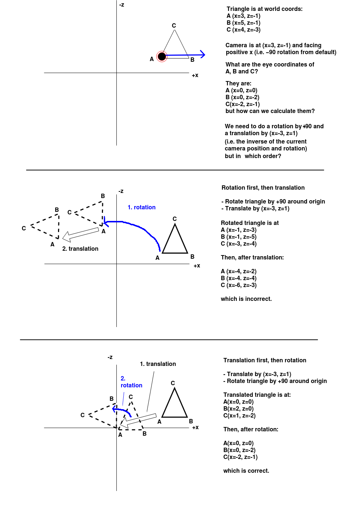

Today we will continue to look at OpenGL by examining how we can perform rotations in 3D worlds.
We have looked at how to do translations using the view matrix. However, it may also be necessary to do rotations too. For example, if the camera position is at x=100, y=0, z=100 in world coordinates, and facing towards positive x in world coordinates, we need to do both a translation and a rotation around the origin to convert the world coordinates into eye coordinates. Note that positive angles are anticlockwise in OpenGL.
The rotation required to convert world to eye coordinates should be the reverse of the current camera rotation with respect to the default (facing negative z). So, for example, if the camera is currently rotated by -90 (90 degrees clockwise), we need to rotate it by +90 to calculate eye coordinates. This is because eye coordinates by definition have the camera on the origin and facing negative z. So if the current world position and orientation are translated by a given translation T and rotation R with respect to the default position and orientation, we need to apply the inverse of T and the inverse of R to revert to the default position and orientation, which the camera will have in eye coordinates. In other words, if the camera is at position (cx, cy, cz) and is facing angle A, then we need to translate world coordinates by (-cx, -cy, -cz) and rotate by -A to obtain eye coordinates. This is true because the camera is always, by definition, at the origin and facing the default direction (i.e. rotation angle 0) in eye coordinates.
Rotation and translation order matters when converting world to eye coordinates. The diagram below proves this, which shows the xz-plane of an OpenGL scene. There is a triangle at these coordinates:
We will now see what effect we get when we try to rotate the triangle first, and then translate it, and conversely, translate the triangle first, then rotate it. Which will give the correct transformation from world to eye coordinates?

So it can be seen that we must apply a translation first (to the origin) and then a rotation (around the origin) to get the desired result.
However in our code, we have to do the opposite, rotation first, then translation. This may seem strange: Why is this?
It's to do with the order in which matrices are multiplied. Remember from last week that this matters: for two matrices A and B, A*B is not the same as B*A. This article discusses this at some length. The points made by the article are summarised in the discussion below.
The key thing is this. When doing each successive multiplication of the view matrix by a new matrix, the view matrix is the left-hand or first matrix in the multiplication, and the new transformation is the right-hand or second matrix. By contrast the points (as vectors) are always on the right-hand side when they are multiplied by a matrix, as we saw last week.
We will now prove that starting with rotation in our code actually means the translation matrix will be applied to the point first. We will start with the view matrix in is initial state as an identity matrix I and apply the rotation matrix R to get an initial view matrix M1:
M1 = I * RThen if we multiply
M1 (the first view matrix) with the translation matrix T, we obtain a new view matrix M2:
M2 = M1 * THowever,
M1 is equal to R (as M1 is the identity matrix multiplied by R), so we can just express M2 with respect to R and T:
M2 = R * TM2 is our final view matrix, as it includes both rotation and translation components. We use the final view matrix, M2, to transform any point
Pworld (with Pworld on the right side, as we saw last week). This produces a transformed point in eye coordinates, Peye:
Peye = M2 * PworldTo prove that this corresponds to translation first, we then expand the equation to express
Peye in terms of R and T:
Peye = R * T * PworldLook at where the original point in world coordinates,
Pworld, is in this expression. It is being multiplied by the translation matrix, T. Thus, the point is being translated first if the rotation matrix is the first thing specified in our code. This becomes clearer if we use brackets in the expression to show exactly what is multiplied by what:
Peye = R * (T * Pworld)So,
T is multiplied by Pworld, to produce an output (translated) point, then R is multiplied by that output point to produce a second point, which is our final point in eye coordinates. This corresponds to the desired order shown on the diagram above: translation and then rotation. So we have proved that if we want the point to be translated and then rotated when calculating the eye coordinates, we must specify the rotation matrix first, and then the translation matrix, when calculating the view matrix to use.
Return to your app from last week, in which you could move round the world in x, y and z directions. You are now going to add a rotation facility to it, to allow the user to rotate the camera. To do this:
camera.rotate(angle)
onDrawFrame() to apply the rotation in addition to the translation. You need to use Camera's rotate() method to specify the rotation required to convert world to eye coordinates by a given angle (anticlockwise=positive, clockwise=negative):
matrix.rotateAboutAxis(worldToEyeAngle, 'y')What are the arguments?
Last time we looked at how to move the camera by changing its position. So far we have simply moved the camera along the x, y and z axes. However, in an AR or VR application, we need to move the camera in the direction it's currently facing, in other words move forward. Let's say, for simplicity, we wish to move the camera forward one unit in the direction it's facing, on the xz-plane (ground plane), i.e. we are only moving x and z coordinates, not y. How do we do that? We need to work out how far in the x direction and how far in the z direction to move, and for this, we need some basic trigonometry.
The trigonometrical functions sine, cosine and tangent are used in calculations involving triangles, to work out either the length of the sides, or the size of angles, in a right-angled triangle. These functions take the size of an angle (usually in radians) as parameters. They are particularly used:
sin θ) is the length of the opposite side divided by the length of the hypotenuse;cos θ) is the length of the adjacent side divided by the length of the hypotenuse;tan θ) is the length of the opposite side divided by the length of the adjacent side. Note, however, we are not using the tangent here.
Why are these useful? They are available as functions from programming languages (and on calculators) and can be used to work out the length of the second and third side of a triangle when we know the size of the angle and the length of one side. This is precisely the problem we have with moving our camera: when we move a camera, we know the angle (because that is the angle the camera is currently facing) and we know the hypotenuse (because that is the distance we need to travel), but we need to find out the distance in the x and z directions in order to update the camera position.
This is shown below:

In this case, -dx is the x distance we need to move and -dz is the z distance we need to move. If the distance to travel is d, then we know, from above, that:
cos θ is -dz/d, as the cosine is the adjacent divided by the hypotenuse. Consequently, dz is equal to -d * cos θ.sin θ is -dx/d, as the sine is the opposite divided by the hypotenuse. Consequently, dx is equal to -d * sin θ.Add buttons on the UI to move the camera forward and back by one unit, according to the current rotation, using the trigonometrical equations shown above. Use the functions Math.sin() and Math.cos() to calculate sines and cosines. Note that these functions take radians so you will have to convert your angle from degrees to radians, i.e:
rad = deg * (Math.PI/180)